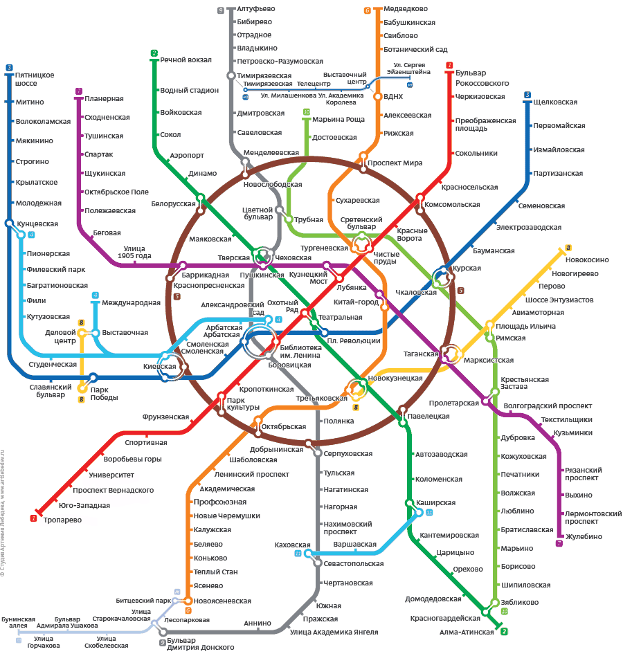

support@renta.com
8 800 455-33-21
+ Разместить объявление
Купить
FAQ
Мой профиль
Главная
Вторичное жильё
Новостройки
Аренда жилья
Коммерческая недвижимость
Правила размещения
Квартира
Дом, коттедж
Нежилое помещение
Цена
₽
$
за
всё
ничего
Количество комнат в квартире
Комната
Студия
1
2
3
4
5
6+
Своб. планир.
Доля
Найти квартиры
Можно без фото
С фото
За любую дату
С фото
Можно без балкона
С фото
Любой тип жилья
С фото
Любой тип сделки
С фото
Тип дома
Любой
панельный дом
сталинка
щитовой
кирпичный
монолитный
кирпично-монолитный
блочный
деревянный
Метраж
кухня
жилая
общая
Этажность
этаж
в доме
Дополнительно
балкон
возможна ипотека
Лифтов
1
2
3
Санузел
1
2
3
Поиск в комментарии
наличие слов
+ добавить слово
исключить слова
+ добавить слово
Расположение
в Москве
не в москве
и Московской области
Населённый пункт
Сызрань
Москва
Архангельск
Улица
Не важно
До метро
Не важно
Схема метро
Карта города
Скрыть схему метро
Выделить станции внутри кольца
Выделить все кольцевые

Показать предложения
Очистить условия поиска
Замечания по работе с формой поиска присылайте на
bug@renta.ru
Поиск в комментарии